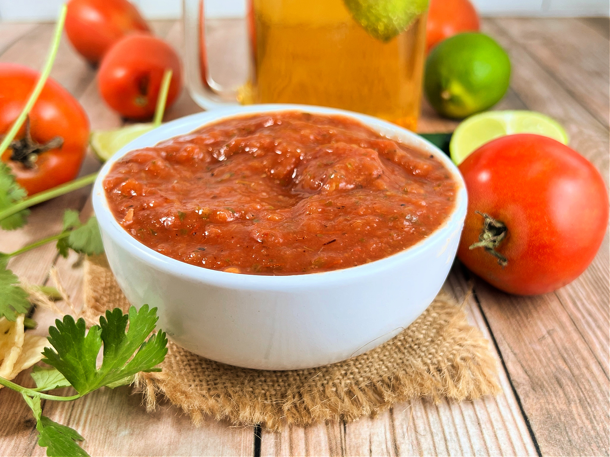
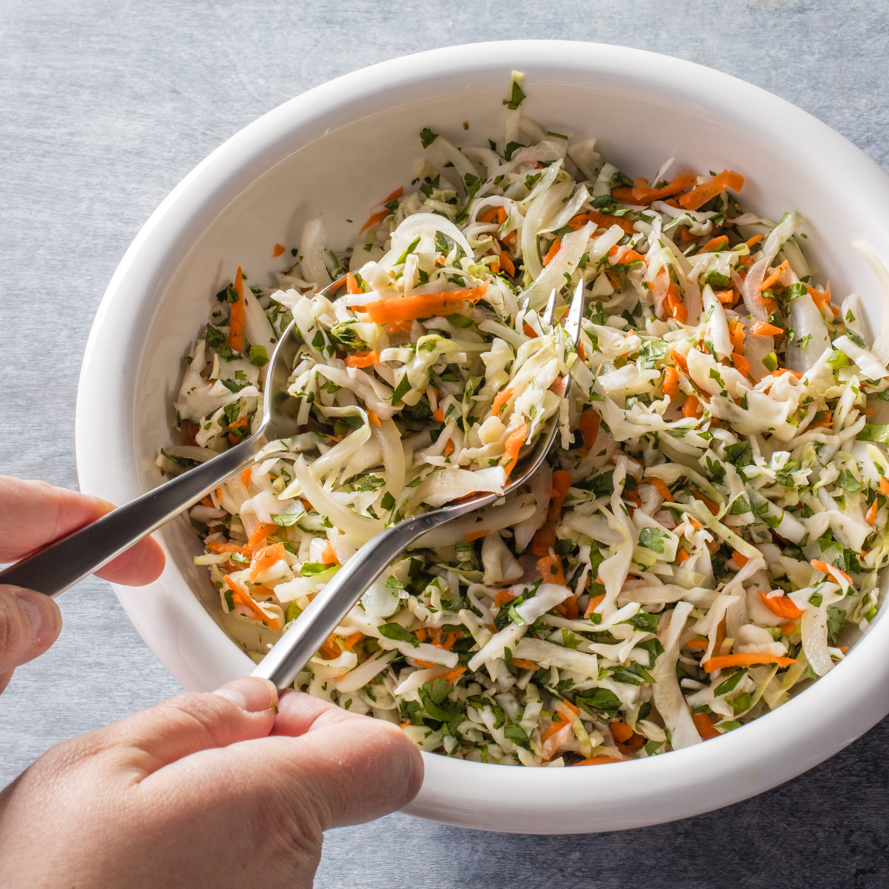

-
Make Dough:
Add masa harina (corn flour) and salt to a large mixing bowl.
Add the warm water, little by little, mixing the dough with your
hand. You may not need all of the water. You want the masa to
be the consistency of a soft play dough. If the dough is too
wet, mix in some more masa harina. If it's too dry, add a
little more water. Mix in butter and chicken bouillon,
if using.
-
Scoop into balls:
Scoop the dough into large, golf-ball-size portions. You can
scoop all of the dough into balls before continuing, or
make 1 pupusa at a time. Be sure to keep the dough covered
with a damp cloth as you work, to keep it from drying out.
Flatten and add filling:
Use the palms of your hands to pat the dough into a disc, about
4 inches in diameter. Scoop about half a tablespoon of the beans
and place it in the center of the dough circle, followed by a
pinch of shredded cheese.
-
Shape into disc:
Gently bring the edges of the dough up and around the filling,
pinching it closed into a ball. Gently pat the dough between
your palms to form it into a disc again. Be gentle so you don’t
have big cracks of filling come through, but if you do have
some, its fine! They don't need to be perfect.
-
Cook:
Heat a large un-greased skillet or pan over medium heat. Place
pupusas on the hot pan and cook for about 2-4 minutes on each
side. You will know the pupusas are ready to flip when the edges
are set and the bottom is lightly golden.
-
Serve
immediately, topped with Curtido and Salsa Roja.
Salsa Roja
Salvadorian Salsa Roja is made with tomatoes, onion, jalapeño, and
garlic. An easy recipe that's perfect with tacos, enchiladas,
pupusas and more.

Equipment
Ingredients
-
4 tomatoes
-
1/2 onion
-
1/2 fresh jalapeño pepper , seeds removed if you want a mild
salsa*
-
1/2 teaspoon salt , more if needed
-
1 clove garlic
-
1 cup water
-
1 teaspoon oil
-
1 teaspoon chicken bouillon paste (or cube)
Instructions
-
Add tomato, onion, jalapeño, salt, garlic and water to a blender
or food processor and puree.
-
Heat oil in a large skillet over medium high heat. Add salsa to
the pan and stir in chicken bouillon.
-
Bring mixture to a low boil and cook, stirring occasionally, for
about 10 minutes, or until a lot of the liquid has been reduced.
-
Allow to cool. Store in the fridge for up to 5 days.
Curtido
Curtido is an authentic Salvadoran cabbage slaw or relish made with
finely shredded cabbage, red onion, carrot, spices, and vinegar.

Ingredients
- 1/2 head cabbage , finely shredded
- 1/2 red onion , very thinly sliced
- 2 carrots , finely shredded
- 1 fresh jalapeño pepper , sliced (optional)
- hot boiling water
- 1/2 teaspoon dried oregano leaves
- salt , to taste
- 1/2 cup white vinegar (or apple cider vinegar)
Instructions
-
Bring 4 cups of water to a boil.
-
Place cabbage in a fine mesh strainer. Very slowly pour boiling
water over the cabbage. Rinse with cold water. Drain well,
pressing out as much water as possible.
-
Add cabbage to large bowl. Add carrot, onion, jalapeno, oregano,
and vinegar and toss well to combine. I like to put it all in a
bowl with a lid and shake it
-
Curtido tastes best after it has marinated for several hours or
days, but you can enjoy it fresh if you'd like.
-
Store curtido in a covered container or mason jar for up to 1
week in the fridge.